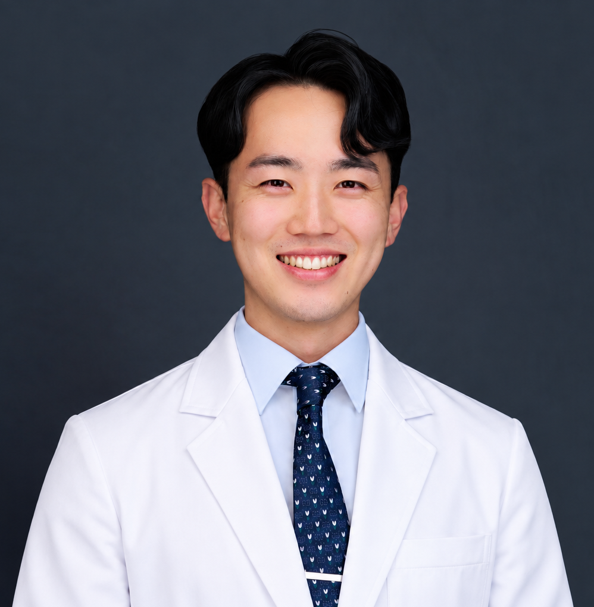
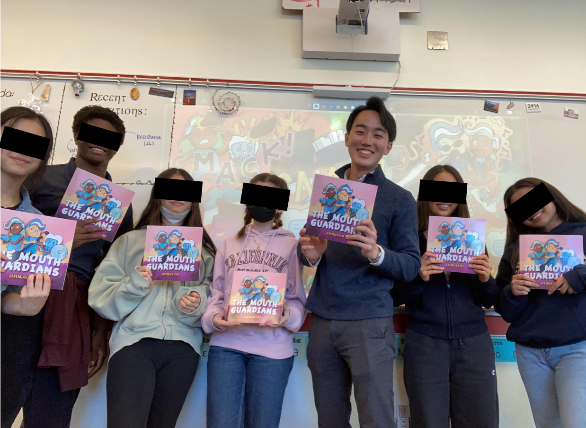
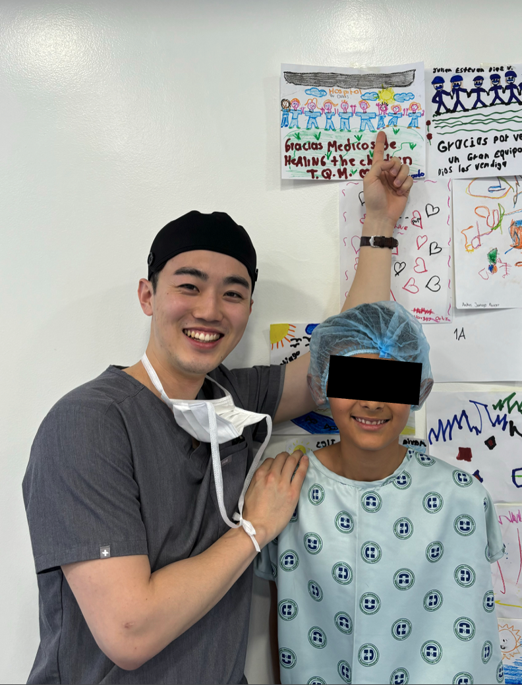

Comprehensive Orthodontics
Diagnosis and treatment planning across a broad range of fixed and adjunctive mechanics, including MARPE, TADs, Class II correctors, and passive self-ligation.
Orthodontist with advanced fellowship training in craniofacial orthodontics
Harvard graduate with specialty training in orthodontics and advanced fellowship experience in craniofacial, surgical, and interdisciplinary care. Based in Los Angeles.

Before entering dentistry, I studied architecture extensively and worked at an architecture firm. That experience shaped how I think about structure, proportion, spatial relationships, and the balance between form and function.
I bring that same perspective to orthodontics. Beyond straight teeth, I focus on how the dentition, jaws, facial growth, and function interact to support balanced, thoughtful treatment outcomes.
My training has included comprehensive orthodontics and complex clear aligner therapy, as well as advanced craniofacial, surgical, and interdisciplinary care. Working with patients with complex needs has sharpened how I diagnose, plan treatment, communicate, and coordinate care across the full spectrum of orthodontic patients.
Diagnosis and treatment planning across a broad range of fixed and adjunctive mechanics, including MARPE, TADs, Class II correctors, and passive self-ligation.
Experience with deep bite, open bite, Class II and Class III treatment, mandibular advancement, extraction cases, hybrid mechanics, Invisalign First, and Invisalign Palatal Expanders.
Advanced fellowship training caring for patients with cleft and craniofacial differences and patients with special healthcare needs in a multidisciplinary setting.
Children’s Hospital Los Angeles
Craniofacial and Special Needs Orthodontics Fellowship
Montefiore Einstein Medical Center
Orthodontics Residency · Chief Resident
Harvard School of Dental Medicine
Doctor of Dental Medicine
Williams College
B.A. in Biology · Bruce Sanderson Prize in Architecture

Writing
I am the author of The Mouth Guardians, a children’s book created to encourage curiosity, imagination, and a greater appreciation of creativity and the whimsical.

Community Education
I have spoken with students in the United States and abroad about education, healthcare careers, dentistry, and professional development. I value making these paths more understandable and accessible to students considering them.

Service
I have participated in mission work during both dental school and residency, experiences that reinforced the importance of service, adaptability, and meeting patients where they are.